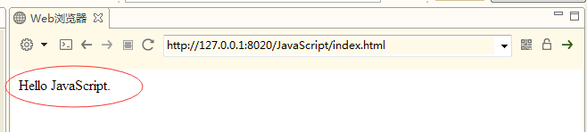
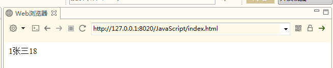
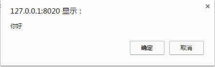
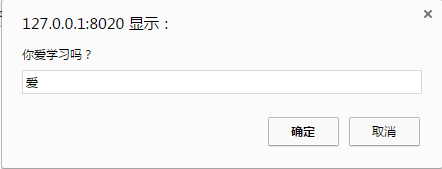

JavaScript
复习
1、写出CSS的格式 2、写出CSS导入方式 3、写出CSS选择器的种类 4、写出学过的CSS的属性 5、写出CSS盒子模型的属性
回顾
1、CSS简介 2、CSS导入方式 3、CSS选择器 4、CSS属性 5、CSS盒子模型 6、CSS扩展属性
内容
1、JavaScript概述 2、JavaScript数据类型 3、JavaScript运算符 4、JavaScript条件语句 5、JavaScript循环语句 6、JavaScript函数 7、JavaScript运算符
目标
1、了解JavaScript概述 2、掌握JavaScript数据类型 3、掌握JavaScript运算符 4、掌握JavaScript条件语句 5、掌握JavaScript循环语句 6、掌握JavaScript函数 7、掌握JavaScript运算符
第一章 JavaScript概述
1.1 JavaScript简介
JavaScript一种直译式脚本语言，是一种动态类型、弱类型、基于原型的语言，内置支持类型。它的解释器被称为JavaScript引擎，为浏览器的一部分，广泛用于客户端的脚本语言，最早是在HTML（标准通用标记语言下的一个应用）网页上使用，用来给HTML网页增加动态功能。
1.2 JavaScript发展史
它最初由Netscape的Brendan Eich设计。JavaScript是甲骨文公司的注册商标。Ecma国际以JavaScript为基础制定了ECMAScript标准。JavaScript也可以用于其他场合，如服务器端编程。完整的JavaScript实现包含三个部分：ECMAScript，文档对象模型，浏览器对象模型。
Netscape在最初将其脚本语言命名为LiveScript，后来Netscape在与Sun合作之后将其改名为JavaScript。JavaScript最初受Java启发而开始设计的，目的之一就是“看上去像Java”，因此语法上有类似之处，一些名称和命名规范也借自Java。但JavaScript的主要设计原则源自Self和Scheme。JavaScript与Java名称上的近似，是当时Netscape为了营销考虑与Sun微系统达成协议的结果。为了取得技术优势，微软推出了JScript来迎战JavaScript的脚本语言。为了互用性，Ecma国际（前身为欧洲计算机制造商协会）创建了ECMA-262标准（ECMAScript）。两者都属于ECMAScript的实现。尽管JavaScript作为给非程序人员的脚本语言，而非作为给程序人员的脚本语言来推广和宣传，但是JavaScript具有非常丰富的特性。
发展初期，JavaScript的标准并未确定，同期有Netscape的JavaScript，微软的JScript和CEnvi的ScriptEase三足鼎立。1997年，在ECMA（欧洲计算机制造商协会）的协调下，由Netscape、Sun、微软、Borland组成的工作组确定统一标准：ECMA-262。
1.3 JavaScript环境搭建
使用HBuilder进行页面开发
1.3.1 HBuilder新建工程
文件->新建->Web项目

1.3.2 创建一个script标签

运行效果：

上述代码的意思是输出内容“Hello JavaScript”到网页上。
至此，我们完成了第一个JavaScript程序。
还可以使用外部引用的形式：
xxxxxxxxxx<html> <body> <script src="js/my.js"></script> </body></html>这种情况就是把原本的JavaScript代码写到一个文件里，之后再引用过来。
第二章 JavaScript基本语法
2.1 变量声明
在JavaScript中，任何变量都用var关键字来声明，var是variable的缩写。
xxxxxxxxxxvar a;var是声明关键字，a是变量名，语句以分号结尾。
这里值得注意的是，JavaScript中的关键字，不可以作为变量名。就像在Java中你不可以写"int int=1;"一样。
JavaScript的关键字：
abstract、else、instanceof、super、boolean、enum、int、switch、break、export、interface、synchronized、byte、extends、let、this、case、false、long、throw、catch、final、native、throws、char、finally、new、transient、class、float、null、true、const、for、package、try、continue、function、private、typeof、debugger、goto、protected、var、default、if、public、void、delete、implements、return、volatile、do、import、short、while、double、in、static、with。
之后的课程还会有文档对象相关的关键字等。
2.2 基本类型
变量的基本类型又有Number、String、Boolean、Undefined、Null五种。
你可以使用:
xxxxxxxxxxvar a=1;来声明一个数字Number类型。
你可以使用:
xxxxxxxxxxvar a="1";来声明一个字符串String类型。
你可以使用
xxxxxxxxxxvar a=false;来声明一个布尔Boolean类型。
在Java中，当一个变量未被初始化的时候，Java中是null或者基本数据类型的默认值。
在JavaScript中，当一个变量未被初始化的时候，它的值为undefined。
下面是演示undefined的情况：
xxxxxxxxxxvar a;document.write(a);运行结果为：

最后，当一个引用不存在时，它为Null。这个现象我们在之后的引用类型时再详细探讨。
2.3 引用类型
在Java中需要类定义，然后在实例对象：
xxxxxxxxxxpublic class Student{ public int id; public String name; public int age;}public class Test{ public static void main(String [] args){ Student student=new Student(); student.id=1; student.name="张三"; student.age=18; }}在JavaScript中对象可以直接写出来：
xxxxxxxxxxvar student={id:1,name:"张三",age:18};document.write(student.id);document.write(student.name);document.write(student.age);运行结果：

事实上，student被赋值为了一个JSON，JSON就是我们在Java基础阶段学过的，全称是JavaScript Object Notation，叫做JavaScript对象标记，也就是说，在JavaScript中，JSON是用于标记一个对象的。
2.4 数组类型
数组就是和我们之前理解的数组概念一致，而在JavaScript中成为Array类型。
我们说JSON可以标记一个对象，那么它同样可以标记一个数组，就是Java基础时我们学过的JSONArray。
xxxxxxxxxxvar a=[1,2,3,4];上述代码，我们说a是一个数组，在a中角标为0的元素是1。可以说这很简单。
接下来我们来尝试把之前的JSON放入数组中：
xxxxxxxxxx //我是注释 /*我也是注释*/ var students = [ {id: 1,name: "张三",age: 18}, {id: 2,name: "李四",age: 18}, {id: 3,name: "王五",age: 19} ]; document.write(students[0].id); document.write(students[0].name); document.write(students[0].age); document.write("<br>");//这个是html的换行的意思 document.write(students[1].id); document.write(students[1].name); document.write(students[1].age); document.write("<br>"); document.write(students[2].id); document.write(students[2].name); document.write(students[2].age);运行结果：

我们看到，访问students这个数组，第0个，第1个，第2个元素，都可以。
2.5 运算符
2.5.1 逻辑运算
与、或、非
&&、||、!
这个就是像我们Java一样，对于真假的boolean值可以进行三种逻辑命题的运算。
xxxxxxxxxxvar a=false;var b=true;//非的逻辑//!a->true;//!b->false;//与的逻辑//a&&a->false;//a&&b->false;//b&&a->false;//b&&b->true;//或的逻辑//a||a->false;//a||b->true;//b||a->true;//b||b->true;2.5.2 关系运算
==相等
<小于
<=小于或等于
>大于
>=大于或等于
!=不等于
===引用相同
xxxxxxxxxxvar a=1;var b=2;//a==a->true//a==b->false//a<b->false//a<=b->false//a>b->true//a>=b->true//a!=b->true//a===b->false//这里三个等于“===”和两个等于“==”区别：//前者相当于比较两个引用，后者相当于比较两个值。//当比较两个值得时候，不考虑数据类型。//也就是说1=="1"是true的。2.5.3 单目运算
自增自减：
xxxxxxxxxxvar a=1;a++;//自增a--;//自减++a;//自增--a;//自减//上述规则和Java一样。2.5.4 双目运算符
+、-、*、/、%、=、+=、-=、/=、*=、%=
xxxxxxxxxxvar a=1;var b=2;a+b;//相加a-b;//相减a*b;//相乘a/b;//相除a%b;//求余a=b;//赋值a+=b;//相加后赋值a-=b;//相减后赋值a/=b;//相除后赋值a*=b;//相乘后赋值a%=b;//求余后赋值//上述规则和Java一样。2.6 条件分支结构
2.6.1 if-else
xxxxxxxxxxvar a=1;var b=1;if(a==b){ document.write("相等");}else{ document.write("不相等");}//很明显，运行结果是相等//这就是if-else的结构，和Java语言是一样的。2.6.2 switch
xxxxxxxxxxvar a=2;switch(a){ case 1: document.write("值为1"); break; case 2: document.write("值为2"); break; case 3: document.write("值为3"); break; default: document.write("值不是3也不是2也不是1");}2.7 循环结构
2.7.1 for循环
xxxxxxxxxxvar a=0;for(var i=1;i<=100;i++){ a+=i;}document.write(a);//上述代码是对1~100求和。2.7.2 while循环
xxxxxxxxxxvar a=0;var i=1;while(i<=100){ a+=i; i++;}document.write(a);//上述代码是对1~100求和。2.7.3 do-while循环
xxxxxxxxxxvar a=0;var i=1;do{ a+=i; i++;}while(i<=100);document.write(a);//上述代码是对1~100求和。2.7.4 break与continue关键字
和Java一样，在JavaScript中，你也可以使用break结束循环，用continue来结束本次循环。
2.8 函数
2.8.1 函数定义
用function关键字来声明，后面是方法名字，参数列表里不写var。整个方法不写返回值类型。
xxxxxxxxxxfunction functionName(parameters){ //执行的代码}下面是一个方法的定义与调用：
xxxxxxxxxxfunction add(a,b){ return a+b;}var c=1;var d=2;var e=add(1,2);document.write(e);//上述代码运行结果是3//这里定义了一个add方法，参数是两个，与Java不同，参数的数据类型并没有。//因为就算是写，全都是var，为了保证语法的简洁性，全写var索性就设计成全都不用写了。//返回值也是同样的道理，区别是，如果你写了返回值，那么有返回值，如果没写return，就没有返回值。2.9 常见弹窗函数
2.9.1 alert
这是一个只能点击确定的弹窗
xxxxxxxxxxalert("你好");运行结果：

alert方法没有返回值，也就是说如果用一个变量去接受返回值，将会得到undefined。无论你点击“确定”还是右上角的那个“X“关闭。
2.9.2 confirm
这是一个你可以点击确定或者取消的弹窗
xxxxxxxxxxconfirm("你好");运行结果：

confirm方法与alert不同，他的返回值是boolean，当你点击“确定”时，返回true，无论你点击“取消”还是右上角的那个“X“关闭，都返回false。
2.9.3 prompt
这是一个你可以输入文本内容的弹窗
xxxxxxxxxxprompt("你爱学习吗？","爱");第一个参数是提示信息，第二个参数是用户输入的默认值。
运行结果：

当你点击确定的时候，返回用户输入的内容。当你点击取消或者关闭的时候，返回null。
2.10 事件
| 事件 | 描述 |
|---|---|
| onchange | HTML 元素改变 |
| onclick | 用户点击 HTML 元素 |
| onmouseover | 用户在一个HTML元素上移动鼠标 |
| onmouseout | 用户从一个HTML元素上移开鼠标 |
| onkeydown | 用户按下键盘按键 |
| onload | 浏览器已完成页面的加载 |
2.11 正则表达式
2.11.1 RegExp 对象
正则表达式是描述字符模式的对象。
正则表达式用于对字符串模式匹配及检索替换，是对字符串执行模式匹配的强大工具。
语法：
var patt=new RegExp(pattern,modifiers);
或者更简单的方式:
var patt=/pattern/modifiers;
如：
xxxxxxxxxxvar re = new RegExp("\\w+");var re = /\w+/;修饰符
修饰符用于执行区分大小写和全局匹配:
| 修饰符 | 描述 |
|---|---|
| i | 执行对大小写不敏感的匹配。 |
| g | 执行全局匹配（查找所有匹配而非在找到第一个匹配后停止）。 |
| m | 执行多行匹配。 |
方括号
方括号用于查找某个范围内的字符：
| 表达式 | 描述 |
|---|---|
| [abc] | 查找方括号之间的任何字符。 |
| [^abc] | 查找任何不在方括号之间的字符。 |
| [0-9] | 查找任何从 0 至 9 的数字。 |
| [a-z] | 查找任何从小写 a 到小写 z 的字符。 |
| [A-Z] | 查找任何从大写 A 到大写 Z 的字符。 |
| [A-z] | 查找任何从大写 A 到小写 z 的字符。 |
| [adgk] | 查找给定集合内的任何字符。 |
| [^adgk] | 查找给定集合外的任何字符。 |
| (red|blue|green) | 查找任何指定的选项。 |
元字符
元字符（Metacharacter）是拥有特殊含义的字符：
| 元字符 | 描述 |
|---|---|
| . | 查找单个字符，除了换行和行结束符。 |
| \w | 查找单词字符。 |
| \W | 查找非单词字符。 |
| \d | 查找数字。 |
| \D | 查找非数字字符。 |
| \s | 查找空白字符。 |
| \S | 查找非空白字符。 |
| \b | 匹配单词边界。 |
| \B | 匹配非单词边界。 |
| \0 | 查找 NULL 字符。 |
| \n | 查找换行符。 |
| \f | 查找换页符。 |
| \r | 查找回车符。 |
| \t | 查找制表符。 |
| \v | 查找垂直制表符。 |
| \xxx | 查找以八进制数 xxx 规定的字符。 |
| \xdd | 查找以十六进制数 dd 规定的字符。 |
| \uxxxx | 查找以十六进制数 xxxx 规定的 Unicode 字符。 |
量词
| 量词 | 描述 |
|---|---|
| n+ | 匹配任何包含至少一个 n 的字符串。例如，/a+/ 匹配 "candy" 中的 "a"，"caaaaaaandy" 中所有的 "a"。 |
| n* | 匹配任何包含零个或多个 n 的字符串。例如，/bo*/ 匹配 "A ghost booooed" 中的 "boooo"，"A bird warbled" 中的 "b"，但是不匹配 "A goat grunted"。 |
| n? | 匹配任何包含零个或一个 n 的字符串。例如，/e?le?/ 匹配 "angel" 中的 "el"，"angle" 中的 "le"。 |
| n{X} | 匹配包含 X 个 n 的序列的字符串。例如，/a{2}/ 不匹配 "candy," 中的 "a"，但是匹配 "caandy," 中的两个 "a"，且匹配 "caaandy." 中的前两个 "a"。 |
| n{X,} | X 是一个正整数。前面的模式 n 连续出现至少 X 次时匹配。例如，/a{2,}/ 不匹配 "candy" 中的 "a"，但是匹配 "caandy" 和 "caaaaaaandy." 中所有的 "a"。 |
| n{X,Y} | X 和 Y 为正整数。前面的模式 n 连续出现至少 X 次，至多 Y 次时匹配。例如，/a{1,3}/ 不匹配 "cndy"，匹配 "candy," 中的 "a"，"caandy," 中的两个 "a"，匹配 "caaaaaaandy" 中的前面三个 "a"。注意，当匹配 "caaaaaaandy" 时，即使原始字符串拥有更多的 "a"，匹配项也是 "aaa"。 |
| n{X,} | 匹配包含至少 X 个 n 的序列的字符串。 |
| n$ | 匹配任何结尾为 n 的字符串。 |
| ^n | 匹配任何开头为 n 的字符串。 |
| ?=n | 匹配任何其后紧接指定字符串 n 的字符串。 |
| ?!n | 匹配任何其后没有紧接指定字符串 n 的字符串。 |
2.11.2 RegExp 对象方法
| 方法 | 描述 | FF | IE |
|---|---|---|---|
| compile | 编译正则表达式。 | 1 | 4 |
| exec | 检索字符串中指定的值。返回找到的值，并确定其位置。 | 1 | 4 |
| test | 检索字符串中指定的值。返回 true 或 false。 | 1 | 4 |
支持正则表达式的 String 对象的方法
| 方法 | 描述 | FF | IE |
|---|---|---|---|
| search | 检索与正则表达式相匹配的值。 | 1 | 4 |
| match | 找到一个或多个正则表达式的匹配。 | 1 | 4 |
| replace | 替换与正则表达式匹配的子串。 | 1 | 4 |
| split | 把字符串分割为字符串数组。 | 1 | 4 |
2.11.3 正则表达式的使用
test()方法：
test()方法搜索字符串指定的值，根据结果并返回真或假。
xxxxxxxxxxvar patt1=new RegExp("e");document.write(patt1.test("The best things in life are free"));由于该字符串中存在字母 "e"，以上代码的输出将是：
true
exec() 方法：
exec() 方法检索字符串中的指定值。返回值是被找到的值。如果没有发现匹配，则返回 null。
xxxxxxxxxxvar patt1=new RegExp("e");document.write(patt1.exec("The best things in life are free"));由于该字符串中存在字母 "e"，以上代码的输出将是：
e
作业题
1.对数组进行排序 不许用sort方法
冒泡 还是 选择
var arr = {7,3,4,1,16,8};
2.打印99乘法表 要求 有格式 必须整齐工整-->把99乘法表嵌套到table中
document.write();
3.文本框输入一个年份，判断是否是闰年（能被4整除却不能被100整除的年份。世纪年份能被400整除的是闰年）将结果在弹出窗口中显示
4.一个游戏，前20关是每一关自身的分数，
21-30关每一关是10分
31-40关，每一关是20分
41-49关，每一关是30分
50关，是100分
输入你现在闯到的关卡数，求你现在拥有的分数
5.完成页面表单验证
邮箱验证 包含 @ 和 . @在.前面
用户名 必须是字母(大小写)开头,可以有数字和下划线 限制5-8位 必填
密码 必填
手机号: 11位 数字
身份证号: 18位 最后一位可以是X
点击提交按钮 完成表单验证 验证若不符合条件 就弹出提示窗口
6.
请输入性别：
请输入身高：
请输入体重：
男性标准体重=（身高cm－80）×70﹪
女性标准体重=（身高cm－70）×60﹪
评估标准
标准体重正负10%为正常体重
标准体重正负10%-20%为体重过重或过轻
标准体重正负20%以上为肥胖或体重不足
轻度肥胖:超过标准体重 20% -30%
中度肥胖:超过标准体重 40%-50%
重度肥胖:超过标准体重 50%以上
要求:
1.判断文本框是否为空 如果为空 需要提示
2.弹出窗口显示评估结果 输出 性别 身高 体重 标准体重
评估结果
轻:输出体重偏轻 多吃点
正常:继续保持
重:轻度/中度/重度肥胖 体重过重 多运动面试题
1、列举Java和JavaScript之间的区别？ Java是一门十分完整、成熟的编程语言。相比之下，JavaScript是一个可以被引入HTML页面的编程语言。这两种语言并不完全相互依赖，而是针对不同的意图而设计的。 Java是一种面向对象编程（OOPS）或结构化编程语言，类似的如C ++或C，而JavaScript是客户端脚本语言，它被称为非结构化编程。 解释JavaScript中定时器的工作？如果有，也可以说明使用定时器的缺点？ 定时器用于在设定的时间执行一段代码，或者在给定的时间间隔内重复该代码。这通过使用函数setTimeout，setInterval和clearInterval来完成。 setTimeout（function，delay）函数用于启动在所述延迟之后调用特定功能的定时器。 setInterval（function，delay）函数用于在提到的延迟中重复执行给定的功能，只有在取消时才停止。 clearInterval（id）函数指示定时器停止。 定时器在一个线程内运行，因此事件可能需要排队等待执行。 2、什么是===运算符？ ===被称为严格等式运算符，当两个操作数具有相同的值而没有任何类型转换时，该运算符返回true。 3、Void（0）怎么用？ Void（0）用于防止页面刷新，并在调用时传递参数“zero”。 Void（0）用于调用另一种方法而不刷新页面。 4、JavaScript中不同类型的错误有几种？ 有三种类型的错误： Load time errors：该错误发生于加载网页时，例如出现语法错误等状况，称为加载时间错误，并且会动态生成错误。 Run time errors：由于在HTML语言中滥用命令而导致的错误。 Logical Errors：这是由于在具有不同操作的函数上执行了错误逻辑而发生的错误。 5、解释window.onload和onDocumentReady？ 在载入页面的所有信息之前，不运行onload函数。这导致在执行任何代码之前会出现延迟。 onDocumentReady在加载DOM之后加载代码。这允许早期的代码操纵。 6、.call（）和.apply（）之间有什么区别？ 函数.call（）和.apply（）在使用上非常相似，只是有一点区别。当程序员知道函数参数的编号时，使用.call（），因为它们必须在调用语句中被提及为参数。另一方面，当不知道数字时使用.apply（）,函数.apply（）期望参数为数组。 .call（）和.apply（）之间的基本区别在于将参数传递给函数。 7、定义事件冒泡？ JavaScript允许DOM元素嵌套在一起。在这种情况下，如果单击子级的处理程序，父级的处理程序也将执行同样的工作 8、decodeURI（）和encodeURI（）是什么？ EncodeURl（）用于将URL转换为十六进制编码。而DecodeURI（）用于将编码的URL转换回正常。 9、为什么不建议在JavaScript中使用innerHTML？ innerHTML内容每次刷新，因此很慢。 在innerHTML中没有验证的余地，因此，更容易在文档中插入错误代码，从而使网页不稳定。